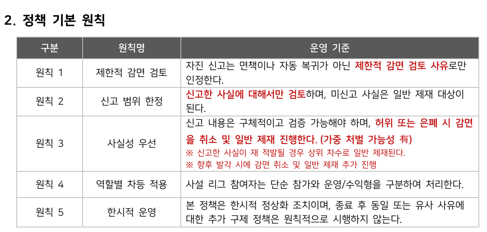
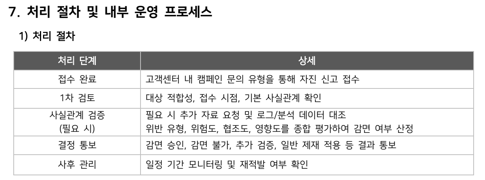
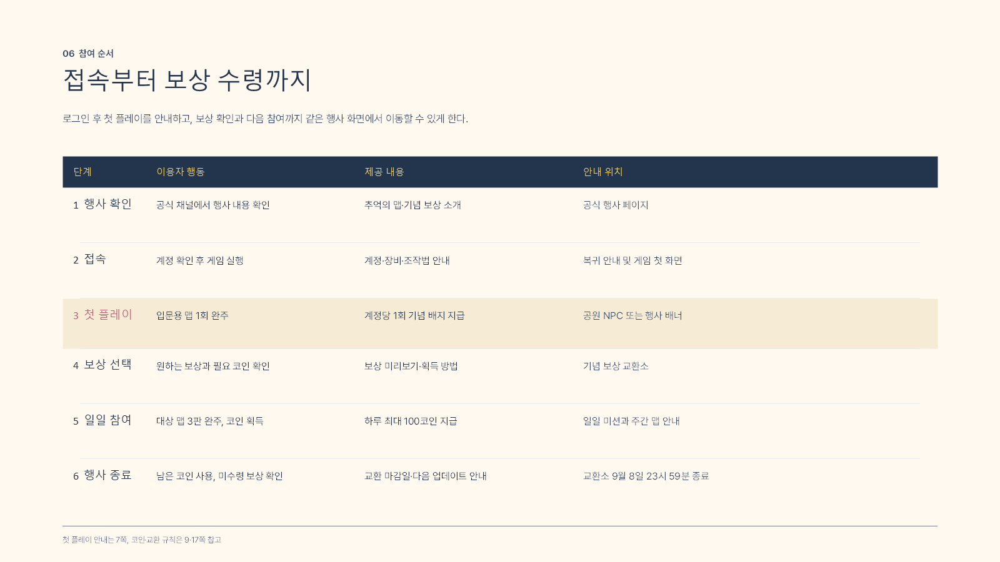
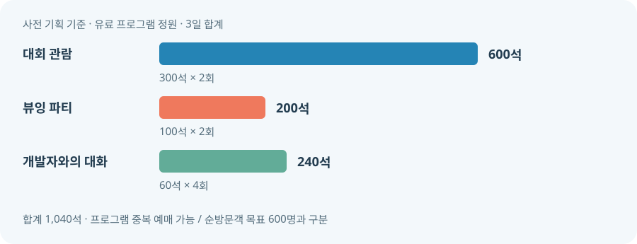
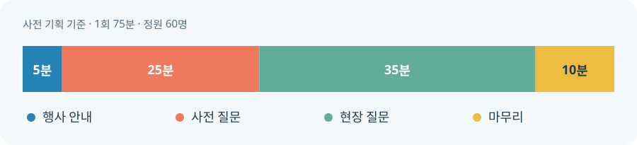
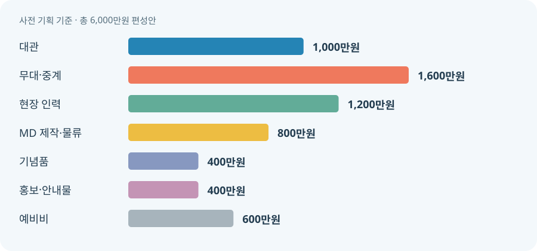

서비스 운영과 사업 기획
운영 리스크에 대응할 자진신고 캠페인을 기획하고 유관부서와 추진 방향을 협의했습니다.
21주년 온라인 복귀 이벤트와 오프라인 행사 운영 초안을 기획했습니다.
자진신고 캠페인
운영 리스크에 대응할 캠페인 기획과 유관부서 협의
캠페인을 준비한 이유
리그 운영을 앞두고 비정상 이용의 사실관계와 사설 리그 참여 경위를 확인할 필요가 있었습니다.
자진신고를 접수한 뒤 무엇을 검증하고 어떤 기준으로 처리할지 정책안으로 정리했습니다.
자진신고는 자동 면책이나 복귀가 아닌, 신고 내용과 증빙을 확인한 뒤 제한적으로 감면을 검토하는 방식으로 정리했습니다.
신고 접수부터 후속 처리까지
신고 대상과 접수 항목, 감면 검토 기준, 후속 처리 절차를 나누어 유관부서가 검토할 정책안을 마련했습니다.
- 기획
자진신고 캠페인 추진안 마련
위반 유형과 행위 기간, 이용 방식, 이익 여부, 증빙 자료를 접수 항목으로 정리했습니다.
사설 리그 참여 건은 참여 경위를 추가로 확인하도록 구성했습니다. - 협의
유관부서와 추진 방향 검토
신고 범위와 검증 기준, 단순 참가와 운영·수익형 참여의 구분을 정책안에 담고 유관부서와 추진 방향을 협의했습니다.
- 실행 준비
신고 이후의 처리 절차 정리
접수와 1차 검토, 사실관계 확인, 결정 통보, 사후 관리로 이어지는 처리안을 정리했습니다.
정책 초안 · ver0.1
신고 범위와 감면 검토 기준
신고 항목과 감면 검토 기준, 후속 절차를 정책 초안에 담았습니다.
- 신고 범위
- 신고한 사실에 한해 검토하고, 제출 정보의 구체성과 검증 가능성을 확인합니다.
- 역할과 행위
- 사설 리그의 단순 참가와 운영·수익형 참여를 구분하고, 반복성·조직성·영리성을 검토 요소로 둡니다.
- 후속 처리
- 자료가 부족하면 추가 확인을 거치고, 검토 결과 통보 이후에도 재적발 여부를 확인하는 절차를 포함했습니다.


담당한 범위
캠페인 추진안을 기획하고 유관부서와 협의하며 실행을 준비했습니다.
최종 결과는 퇴사 이후에 확인했습니다.
운영 대응과 함께, 21주년을 맞아 이용자가 다시 게임을 즐길 수 있는 이벤트를 기획했습니다.
Business Planning · 기획 제안
21주년 온라인 이벤트 기획 초안
복귀 이용자의 첫 플레이부터 보상 교환까지를 담은 온라인 이벤트 기획 초안입니다.
다시 달리는 우리들의 동화나라
추억의 맵과 기념 보상을 활용한 5주간의 복귀 이벤트를 제안한 기획 초안입니다.
첫 플레이 안내부터 주차별 참여와 보상 교환까지의 이용 흐름을 담았습니다.
복귀 이용자가 처음 마주할 어려움
계정 확인과 장비·조작 설정, 맵 선택에서 복귀 이용자가 겪을 어려움을 가정했습니다.
쉬운 첫 플레이를 마친 뒤 다음 참여로 이어지도록 안내하는 구성을 제안했습니다.
제안한 참여 흐름
- 행사 확인
- 접속
- 첫 플레이
- 보상 선택
- 일일 참여
- 종료 안내
- 우리들의 첫 한 판
- 입문용 맵을 한 번 완주하며 시작하도록 구성했습니다.
순위 조건 없이 재도전할 수 있습니다. - 추억의 길 주간 투어
- 기존 맵을 활용해 5주 동안 다른 주제로 참여하는 구성입니다.
운영 맵은 추후 선정하는 안으로 두었습니다. - 기념 보상 교환소
- 플레이로 얻은 코인으로 원하는 보상부터 선택하는 방식입니다.
- 나의 동화나라 추억 카드
- 캐릭터·맵·메시지를 직접 선택하는 이미지 저장안입니다.
외부 계정 연동과 공유는 필수 조건에서 제외했습니다.
운영 전에 검토할 조건
기존 미션·교환소 기능의 재사용 가능성, 보상 중복·미지급 대응, 코인 획득 종료와 교환 종료의 구분, 개인정보 기본 비공개를 검토 항목으로 담았습니다.
첫날 완주율, 재접속률, 보상 도달률을 확인 지표로 정했습니다.

제안 일정: 2026.7.29 점검 후~9.1, 교환소 9.8 종료.
일일 최대 100코인, 주요 보상 합계 1,600코인, 최대치 기준 16일을 기준으로 설계했습니다.
오프라인 행사는 별도 검토 범위
온라인 복귀 이벤트와 별도로, 오프라인 행사의 프로그램과 현장 운영안을 정리했습니다.
아래에서 별도 사전 기획안을 확인할 수 있습니다.
Business Planning · 사전 기획안
21주년 오프라인 행사 운영 기획
대회 관람, 개발자와의 대화, 굿즈 판매를 함께하는 3일간의 팬 행사를 기획했습니다.
프로그램 참여와 현장 대기, 종료 후 문의 처리까지 운영 흐름을 정리했습니다.
실행 전 기획안입니다.
일정·정원·예산·운영 목표는 모두 사전 기획 기준의 계획 수치입니다.
프로그램별 정원과 예매
순방문객 목표는 600명, 유료 프로그램은 총 1,040석으로 편성했습니다.
한 사람이 여러 프로그램을 예매할 수 있어 방문객 수와 좌석 수를 나누어 관리하는 안입니다.
대회 관람은 토·일 각 300석, 뷰잉 파티는 각 100석으로 구성했습니다.
개발자와의 대화는 회차당 60명으로 금요일 2회, 토·일 각 1회를 배치했습니다.

- MD샵 별도 예약
- 회차당 80명, 하루 3회로 3일간 총 720건을 받는 안입니다.
예약은 무료이며 상품 구매 비용은 별도입니다.
MD 예약 건수는 유료 좌석 합계에 포함하지 않습니다. - 예매 안내
- 회차와 정원, 금액, 입장 시간을 함께 안내하고 프로그램 이동에는 최소 20분을 둡니다.
- 입장 확인
- 일반 입장 창구 5개와 별도 확인 창구 1개를 편성했습니다.
평균 대기는 15분 이내를 목표로 하고, 예매 정보 불일치나 추가 확인은 별도 창구에서 처리하는 안입니다.
회차별 입장 시간을 나누고, 혼잡하면 대기 구역으로 안내합니다.
변경 사항은 예매 페이지와 현장 안내에 함께 반영하도록 정리했습니다.
개발자와의 대화 · 회차당 75분
사전 질문에서 자주 나온 내용을 먼저 다루고 현장 질문 시간을 별도로 확보했습니다.
안내 5분, 사전 질문 25분, 현장 질문 35분, 마무리 10분으로 구성했습니다.

현장에서 답하기 어려운 질문은 담당 부서와 다음 안내 일정을 정리합니다.
행사 종료 후 7일 이내에 답변과 추가 확인 사항을 공개하는 일정으로 계획했습니다.
굿즈와 방문 기념품 운영안
- 굿즈
- 8~10종, 초도 600개를 3천~3만원 범위로 구성하는 안입니다.
일자별 판매 수량과 1인 구매 한도를 정하고, 현장 수령과 배송 상품을 구분해 안내합니다. - 방문 기념품
- 순방문객 목표 600명에 예비 수량 10%를 더해 660세트를 편성했습니다.
최초 입장 때 1인 1회 지급하고 수령 여부를 확인해 중복 지급을 막는 방식입니다.
예산 배분안 · 외부 집행비 6,000만원
무대·중계와 현장 인력에 2,800만원을 배정하고, 추가 비용에 대비해 600만원을 예비비로 남겼습니다.
대관과 제작 견적에 따라 항목별 금액을 조정하는 안입니다.

내부 인건비와 대회 상금·선수 지원 비용은 별도 협의 항목입니다.
운영 목표와 확인 방법
아래 값은 행사 운영을 준비하기 위한 목표입니다.
- 유료 좌석 판매율
- 80%
- 판매 티켓 대비 입장률
- 85%
- 평균 입장 대기
- 15분 이내
- 참여자 만족도
- 4.0 / 5
예매 내역과 입장 기록으로 판매율과 입장률을 확인하고, 대기는 혼잡 시간대에 표본 측정하는 안입니다.
만족도는 행사 후 설문으로 확인하도록 계획했습니다.
목표를 적용하면 유료 티켓 판매 832매, 예상 입장은 약 707건입니다.
1,040석 × 판매율 80% × 입장률 85%로 계산한 값이며, 중복 참여를 포함하므로 순방문객 목표 600명과는 구분합니다.
12주 전부터 종료 후까지의 준비 일정
행사 12주 전부터 준비하고, 종료 후 2주 안에 판매 내역과 운영 결과를 정리하는 일정안입니다.
| 시점 | 주요 업무 | 완료 기준 |
|---|---|---|
| 12–10주 전 | 프로그램·대관·예산 검토 | 규모와 비용 범위 결정 |
| 10–8주 전 | 회차·정원·업무 분담 | 운영 범위와 담당자 확정 |
| 8–6주 전 | 예매·입장·MD·기념품 준비 | 예매 정책 및 제작 사양 확정 |
| 6–4주 전 | 행사 안내·사전 질문 모집 준비 | 안내 페이지와 운영 자료 검수 |
| 4–2주 전 | 예매·재고·인력 점검 | 판매 현황과 배치표 확인 |
| 2–1주 전 | 리허설·교육·방문 안내 | 입장 동선과 대응 절차 점검 |
| 행사 3일 | 입장·지급·판매·문의 대응 | 회차별 현황과 이슈 기록 |
| 종료 후 7일 | 질의응답 공개·문의 후속 처리 | 답변 및 추가 안내 일정 게시 |
| 종료 후 14일 | 판매·설문·운영 결과 정리 | 정산 및 개선 사항 정리 |
서비스 운영과 사업 기획
운영 대응과 다음 기획을 함께
자진신고 캠페인에서는 신고 기준과 처리 절차를 정리하고 유관부서와 협의했습니다.
21주년에는 온라인 복귀 이벤트의 참여 흐름과 보상, 오프라인 행사의 프로그램과 현장 운영안을 기획했습니다.
서비스에서 발생한 문제에 대응하는 일과 다음 경험을 준비하는 일을 함께 맡았습니다.